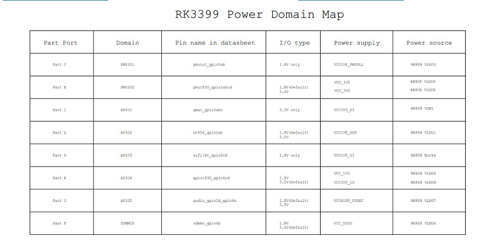

GPIO¶
Introduction¶
GPIO, full name General-Purpose Input/Output (General-Purpose Input/Output), is a general-purpose pin that can be dynamically configured and controlled during software operation. RK3399 has 5 groups of GPIO banks: GPIO0~GPIO4, and each group is distinguished by numbers A0~A7, B0~B7, C0~C7, D0~D7. The initial state of all GPIOs after power-on is input mode, which can be set as pull-up or pull-down by software, or as interrupt pin. The drive strength is programmable. In addition to general input and output functions, each GPIO port may also have other multiplexing functions, such as GPIO2_A2, which can be used as the following functions:
GPIO2_A2
GIF_D2
The drive current, pull-up and pull-down of each GPIO port and the initial state after reset are different. For details, please refer to the chapter “Chapter 10 GPIO” in the “RK3399 Specification”. The GPIO driver of RK3399 is implemented in the following pinctrl file:
kernel/drivers/pinctrl/pinctrl-rockchip.c
The core is to fill the GPIO bank method and parameters, and call gpiochip_add to register to the kernel.
This article uses the two general GPIO ports TP_RST (GPIO0_B4) and LCD_RST (GPIO4_D5) as examples to write a simple operation GPIO port driver. The path in the SDK is:
kernel/drivers/gpio/gpio-firefly.c
The following takes this driver as an example to introduce the operation of GPIO.
input Output¶
First add the resource description of the driver in the DTS file:
kernel/arch/arm64/boot/dts/rockchip/rk3399-firefly-demo.dtsi
gpio_demo: gpio_demo {
status = "okay";
compatible = "firefly,rk3399-gpio";
firefly-gpio = <&gpio0 12 GPIO_ACTIVE_HIGH>; /* GPIO0_B4 */
firefly-irq-gpio = <&gpio4 29 IRQ_TYPE_EDGE_RISING>; /* GPIO4_D5 */
};
Here defines a pin as a general output and input port:
firefly-gpio GPIO0_B4
The description of the pins of ROC-RK3399-PC-Pro dts is different from that of Firefly-RK3288. GPIO0_B4 is described as: <&gpio0 12 GPIO_ACTIVE_HIGH>, where 12 is derived from: 8+4=12, where 8 is because GPIO0_B4 belongs to group B of GPIO0 , If it is group A, it is 0, if it is group C, it is 16, if it is group D, it is 24, and then recursively, and 4 is because of the 4 after B4.
GPIO_ACTIVE_HIGH means high level is active, if you want low level to be active, you can change it to: GPIO_ACTIVE_LOW, this attribute will be read by the driver.
Then analyze the resources added by DTS in the probe function, the code is as follows:
static int firefly_gpio_probe(struct platform_device *pdev)
{
int ret;
int gpio;
enum of_gpio_flags flag;
struct firefly_gpio_info *gpio_info;
struct device_node *firefly_gpio_node = pdev->dev.of_node;
printk("Firefly GPIO Test Program Probe\n");
gpio_info = devm_kzalloc(&pdev->dev,sizeof(struct firefly_gpio_info *), GFP_KERNEL);
if (!gpio_info) {
return -ENOMEM;
}
gpio = of_get_named_gpio_flags(firefly_gpio_node, "firefly-gpio", 0, &flag);
if (!gpio_is_valid(gpio)) {
printk("firefly-gpio: %d is invalid\n", gpio); return -ENODEV;
}
if (gpio_request(gpio, "firefly-gpio")) {
printk("gpio %d request failed!\n", gpio);
gpio_free(gpio);
return -ENODEV;
}
gpio_info->firefly_gpio = gpio;
gpio_info->gpio_enable_value = (flag == OF_GPIO_ACTIVE_LOW) ? 0:1;
gpio_direction_output(gpio_info->firefly_gpio, gpio_info->gpio_enable_value);
printk("Firefly gpio putout\n");
...
}
of_get_named_gpio_flags reads the GPIO configuration numbers and flags of firefly-gpio and firefly-irq-gpio from the device tree, gpio_is_valid judges whether the GPIO number is valid, and gpio_request applies to occupy the GPIO. If there is an error in the initialization process, you need to call gpio_free to release the previously applied and successful GPIO. Call gpio_direction_output in the driver to set the output high or low level. Here the default output is the active level GPIO_ACTIVE_HIGH obtained from DTS, which is high level. If the drive works normally, you can use a multimeter to measure the corresponding The pin should be high. In practice, if you want to read GPIO, you need to set it to input mode first, and then read the value:
int val;
gpio_direction_input(your_gpio);
val = gpio_get_value(your_gpio);
The following are commonly used GPIO API definitions:
#include <linux/gpio.h>
#include <linux/of_gpio.h>
enum of_gpio_flags {
OF_GPIO_ACTIVE_LOW = 0x1,
};
int of_get_named_gpio_flags(struct device_node *np, const char *propname,
int index, enum of_gpio_flags *flags);
int gpio_is_valid(int gpio);
int gpio_request(unsigned gpio, const char *label);
void gpio_free(unsigned gpio);
int gpio_direction_input(int gpio);
int gpio_direction_output(int gpio, int v);
Interrupt¶
The Firefly example program also contains an interrupt pin. The interrupt usage of the GPIO port is similar to the input and output of GPIO. First, add the resource description of the driver in the DTS file:
kernel/arch/arm64/boot/dts/rockchip/rk3399-firefly-port.dtsi
gpio {
compatible = "firefly-gpio";
firefly-irq-gpio = <&gpio4 29 IRQ_TYPE_EDGE_RISING>; /* GPIO4_D5 */
};
IRQ_TYPE_EDGE_RISING 表示中断由上升沿触发，当该引脚接收到上升沿信号时可以触发中断函数。 这里还可以配置成如下：
IRQ_TYPE_NONE //Default value, no defined interrupt trigger type
IRQ_TYPE_EDGE_RISING //Rising edge trigger
IRQ_TYPE_EDGE_FALLING //Falling edge trigger
IRQ_TYPE_EDGE_BOTH //Trigger on both rising and falling edges
IRQ_TYPE_LEVEL_HIGH //High level trigger
IRQ_TYPE_LEVEL_LOW //Low level trigger
Then analyze the resources added by DTS in the probe function, and then apply for interrupted registration, the code is as follows:
static int firefly_gpio_probe(struct platform_device *pdev)
{
int ret;
int gpio;
enum of_gpio_flags flag;
struct firefly_gpio_info *gpio_info;
struct device_node *firefly_gpio_node = pdev->dev.of_node;
...
gpio_info->firefly_irq_gpio = gpio;
gpio_info->firefly_irq_mode = flag;
gpio_info->firefly_irq = gpio_to_irq(gpio_info->firefly_irq_gpio);
if (gpio_info->firefly_irq) {
if (gpio_request(gpio, "firefly-irq-gpio")) {
printk("gpio %d request failed!\n", gpio); gpio_free(gpio); return IRQ_NONE;
}
ret = request_irq(gpio_info->firefly_irq, firefly_gpio_irq, flag, "firefly-gpio", gpio_info);
if (ret != 0) free_irq(gpio_info->firefly_irq, gpio_info);
dev_err(&pdev->dev, "Failed to request IRQ: %d\n", ret);
}
return 0;
}
static irqreturn_t firefly_gpio_irq(int irq, void *dev_id) //中断函数
{
printk("Enter firefly gpio irq test program!\n");
return IRQ_HANDLED;
}
Call gpio_to_irq to convert the PIN value of the GPIO to the corresponding IRQ value, call gpio_request to apply for the IO port, call request_irq to apply for an interrupt, if it fails, call free_irq to release, in this function gpio_info-firefly_irq Is the hardware interrupt number to be applied for, firefly_gpio_irq is the interrupt function, gpio_info->firefly_irq_mode is the attribute of interrupt processing, firefly-gpio is the name of the device driver, and gpio_info is the device structure of the device. It is used when registering shared interrupts.
Reuse¶
How to define which functions of GPIO can be reused, and how to switch functions at runtime? Take I2C4 as an example for a brief introduction.
Checking the specification table shows that the functions of I2C4_SDA and I2C4_SCL are defined as follows:
Pad# func0 func1
I2C4_SDA/GPIO1_B3 gpio1b3 i2c4_sda
I2C4_SCL/GPIO1_B4 gpio1b4 i2c4_scl
In kernel/arch/arm64/boot/dts/rockchip/rk3399.dtsi there are:
i2c4: i2c@ff3d0000{
compatible = "rockchip,rk3399-i2c";
reg = <0x0 0xff3d0000 0x0 0x1000>;
clocks = <&pmucru SCLK_I2C4_PMU>, <&pmucru PCLK_I2C4_PMU>;
clock-names = "i2c", "pclk";
interrupts = <GIC_SPI 56 IRQ_TYPE_LEVEL_HIGH 0>;
pinctrl-names = "default", "gpio";
pinctrl-0 = <&i2c4_xfer>;
pinctrl-1 = <&i2c4_gpio>; //此处源码未添加
#address-cells = <1>;
#size-cells = <0>;
status = "disabled";
};
Related to multiplexing control is the attribute at the beginning of pinctrl-:
pinctrl-names defines a list of state names: default (i2c function) and gpio two states.
pinctrl-0 defines the pinctrl that needs to be set in state 0 (ie default): &i2c4_xfer
pinctrl-1 defines the pinctrl that needs to be set in state 1 (i.e. gpio): &i2c4_gpio
These pinctrls are defined in kernel/arch/arm64/boot/dts/rockchip/rk3399.dtsi as follows:
pinctrl: pinctrl {
compatible = "rockchip,rk3399-pinctrl";
rockchip,grf = <&grf>;
rockchip,pmu = <&pmugrf>;
#address-cells = <0x2>;
#size-cells = <0x2>;
ranges;
i2c4{
i2c4_xfer: i2c4-xfer{
rockchip,pins = <1 12 RK_FUNC_1 &pcfg_pull_none>, <1 11 RK_FUNC_1 &pcfg_pull_none>;
};
i2c4_gpio: i2c4-gpio {
rockchip,pins = <1 12 RK_FUNC_GPIO &pcfg_pull_none>, <1 11 RK_FUNC_GPIO &pcfg_pull_none>;
};
};
RK_FUNC_1,RK_FUNC_GPIO 的定义在 kernel/include/dt-bindings/pinctrl/rk.h 中：
#define RK_FUNC_GPIO 0
#define RK_FUNC_1 1
#define RK_FUNC_2 2
#define RK_FUNC_3 3
#define RK_FUNC_4 4
#define RK_FUNC_5 5
#define RK_FUNC_6 6
#define RK_FUNC_7 7
In addition, values like “1 11” and “1 12” have coding rules. The coding method is the same as that described in the previous section “Input and Output”. “1 11” represents GPIO1_B3, and “1 12” represents GPIO1_B4.
When multiplexing, if you select default (i.e. i2c function), the system will apply the pinctrl i2c4_xfer, and finally switch the two pins GPIO1_B3 and GPIO1_B4 to the corresponding i2c function; and if gpio is selected, the system will apply The i2c4_gpio pinctrl restores the GPIO1_B3 and GPIO1_B4 pins to GPIO functions.
Let’s take a look at how the i2c driver kernel/drivers/i2c/busses/i2c-rockchip.c switches multiplexing functions:
static int rockchip_i2c_probe(struct platform_device *pdev)
{
struct rockchip_i2c *i2c = NULL; struct resource *res;
struct device_node *np = pdev->dev.of_node; int ret;//
...
i2c->sda_gpio = of_get_gpio(np, 0);
if (!gpio_is_valid(i2c->sda_gpio)) {
dev_err(&pdev->dev, "sda gpio is invalid\n");
return -EINVAL;
}
ret = devm_gpio_request(&pdev->dev, i2c->sda_gpio, dev_name(&i2c->adap.dev));
if (ret) {
dev_err(&pdev->dev, "failed to request sda gpio\n");
return ret;
}
i2c->scl_gpio = of_get_gpio(np, 1);
if (!gpio_is_valid(i2c->scl_gpio)) {
dev_err(&pdev->dev, "scl gpio is invalid\n");
return -EINVAL;
}
ret = devm_gpio_request(&pdev->dev, i2c->scl_gpio, dev_name(&i2c->adap.dev));
if (ret) {
dev_err(&pdev->dev, "failed to request scl gpio\n");
return ret;
}
i2c->gpio_state = pinctrl_lookup_state(i2c->dev->pins->p, "gpio");
if (IS_ERR(i2c->gpio_state)) {
dev_err(&pdev->dev, "no gpio pinctrl state\n");
return PTR_ERR(i2c->gpio_state);
}
pinctrl_select_state(i2c->dev->pins->p, i2c->gpio_state);
gpio_direction_input(i2c->sda_gpio);
gpio_direction_input(i2c->scl_gpio);
pinctrl_select_state(i2c->dev->pins->p, i2c->dev->pins->default_state);
...
}
The first is to call of_get_gpio to take out the gpios of the i2c4 node in the device tree, which belongs to the two defined gpio:
gpios = <&gpio1 GPIO_B3 GPIO_ACTIVE_LOW>, <&gpio1 GPIO_B4 GPIO_ACTIVE_LOW>;
Then devm_gpio_request is called to apply for gpio, and then pinctrl_lookup_state is called to find the gpio state, and the default state default has been saved by the framework to i2c->dev-pins->default_state.
Finally, call pinctrl_select_state to select the default or gpio function.
The following are commonly used multiplexing API definitions:
#include <linux/pinctrl/consumer.h>
struct device {
//...
#ifdef CONFIG_PINCTRL
struct dev_pin_info *pins;
#endif
//...
};
struct dev_pin_info {
struct pinctrl *p;
struct pinctrl_state *default_state;
#ifdef CONFIG_PM
struct pinctrl_state *sleep_state;
struct pinctrl_state *idle_state;
#endif
};
struct pinctrl_state * pinctrl_lookup_state(struct pinctrl *p, const char *name);
int pinctrl_select_state(struct pinctrl *p, struct pinctrl_state *s);
IO-Domain¶
In a complex system-on-chip (SOC), designers generally divide the power supply of the system into multiple independent blocks, which are called Power Domains. This has many advantages, such as:
The voltage domain is uniformly configured on the DTS node of the IO-Domain, and each driver does not need to be configured once, which is easy to manage;
In accordance with the Upstream approach, it is more convenient if you need Upstream in the future;
The IO-Domain driver supports dynamic adjustment of the voltage domain during operation. For example, a certain Regulator of the PMIC can dynamically switch between 1.8v and 3.3v. Once the Regulator voltage changes, the IO-Domain driver will be notified to reset the voltage domain.
ROC-RK3399-PC Pro 原理图上的 Power Domain Map 表以及配置如下表所示：

Through the schematic diagram of RK3399 SDK, we can see that the voltage domain of bt656-supply is connected to vcc18_dvp, and vcc_io is from VLDO1 of PMIC RK808;
You can find vcc1v8_dvp in DTS, set bt656-supply = <&vcc18_dvp>.
The configuration of other circuits is similar. It should be noted that if it is another PMIC, the Regulator used is different. The actual circuit conditions are the standard.
Debugging method¶
IO instruction¶
A very useful tool for GPIO debugging is the IO command. The Android system of ROC-RK3399-PC Pro has built-in IO commands by default. Using IO commands, you can read or write the status of each IO port in real time. Here is a brief introduction The use of IO instructions. First check the help of IO instruction:
#io --help
Unknown option: ?
Raw memory i/o utility - $Revision: 1.5 $
io -v -1|2|4 -r|w [-l <len>] [-f <file>] <addr> [<value>]
-v Verbose, asks for confirmation
-1|2|4 Sets memory access size in bytes (default byte)
-l <len> Length in bytes of area to access (defaults to
one access, or whole file length)
-r|w Read from or Write to memory (default read)
-f <file> File to write on memory read, or
to read on memory write
<addr> The memory address to access
<val> The value to write (implies -w)
Examples:
io 0x1000 Reads one byte from 0x1000
io 0x1000 0x12 Writes 0x12 to location 0x1000
io -2 -l 8 0x1000 Reads 8 words from 0x1000
io -r -f dmp -l 100 200 Reads 100 bytes from addr 200 to file
io -w -f img 0x10000 Writes the whole of file to memory
Note access size (-1|2|4) does not apply to file based accesses.
As you can see from the help, if you want to read or write a register, you can use:
io -4 -r 0x1000 //Read the value of 4-bit register starting from 0x1000
io -4 -w 0x1000 //Write the value of the 4-bit register from 0x1000
Use example:
View the multiplexing of GPIO1_B3 pins
From the datasheet of the master control, the base address of the register corresponding to GPIO1 is: 0xff320000
The offset of GPIO1B_IOMUX found from the datasheet of the master control is: 0x00014
The address of the iomux register of GPIO1_B3 is: base address (Operational Base) + offset (offset)=0xff320000+0x00014=0xff320014
Use the following command to check the multiplexing of GPIO1_B3:
# io -4 -r 0xff320014
ff320014: 0000816a
Find [7:6] from the datasheet:
gpio1b3_sel
GPIO1B[3] iomux select
2'b00: gpio
2'b01: i2c4sensor_sda
2'b10: reserved
2'b11: reserved
Therefore, it can be determined that the GPIO is multiplexed as i2c4sensor_sda.
If you want to reuse as GPIO, you can use the following command settings:
# io -4 -w 0xff320014 0x0000812a
GPIO debug interface¶
The purpose of the Debugfs file system is to provide developers with more kernel data to facilitate debugging. Here GPIO debugging can also use the Debugfs file system to get more kernel information. The interface of GPIO in the Debugfs file system is /sys/kernel/debug/gpio, the information of this interface can be read like this:
FAQs¶
Q1: How to switch the MUX value of PIN to normal GPIO?¶
A1: When using GPIO request, the MUX value of the PIN will be forcibly switched to GPIO, so when using the PIN pin as a GPIO function, make sure that the PIN pin is not used by other modules.
Q2: Why is the value I read out with the IO instruction is 0x00000000?¶
A2: If you use the IO command to read the register of a GPIO, the value read is abnormal, such as 0x00000000 or 0xffffffff, etc., please confirm whether the CLK of the GPIO is turned off. The CLK of the GPIO is controlled by the CRU. You can read the datasheet Next, use the CRU_CLKGATE_CON* register to check whether the CLK is turned on. If it is not turned on, you can use the io command to set the corresponding register to turn on the corresponding CLK. After turning on the CLK, you should be able to read the correct register value.
Q3: How to check if the voltage of the PIN pin is wrong?¶
A3: When measuring the voltage of the PIN pin is incorrect, if external factors are excluded, you can confirm whether the IO voltage source where the PIN is located is correct and whether the IO-Domain configuration is correct.
Q4: What is the difference between gpio_set_value() and gpio_direction_output()?¶
A4: If you do not dynamically switch input and output when using this GPIO, it is recommended to set the GPIO output direction at the beginning, and use the gpio_set_value() interface when pulling it up and pulling it down later. It is not recommended to use gpio_direction_output() because of the gpio_direction_output interface There is a mutex lock inside, there will be an error exception when calling the interrupt context, and compared to gpio_set_value, gpio_direction_output does more and is wasteful.